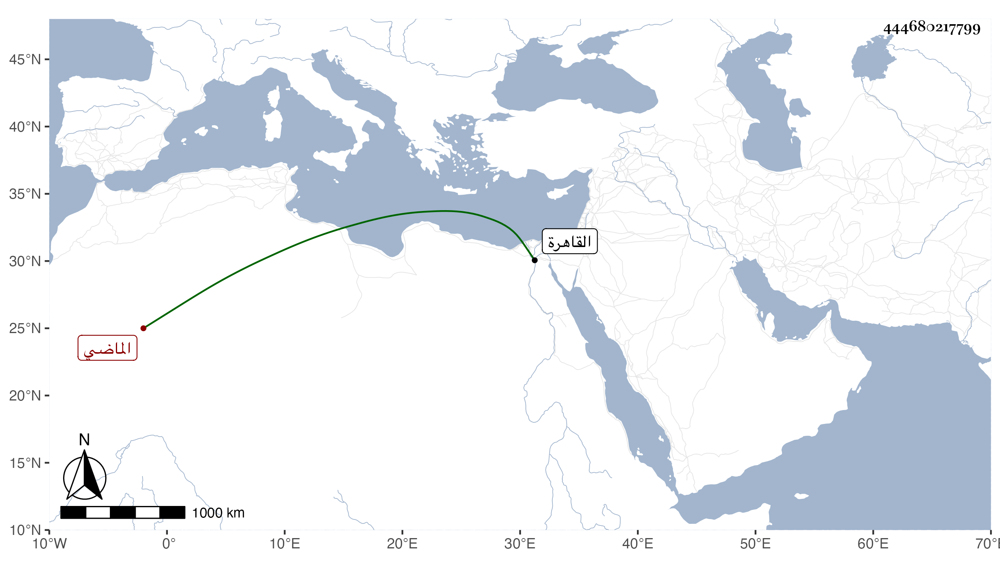

0902Sakhawi.DawLamic.ITO20230111-ara1.EIS1600.444680217799
Biography ID: 444680217799
537
فاطمة ابنة الشهاب أحمد بن سليمان بن أحمد بن عمر بن عوجان بمهملة ثم واو وجيم مفتوحات الماضي ابوها وجدها واخوها محمد أم الكمال بن أبي شريف واخيه إبراهيم وقطنت مع ولدها القاهرة مدة حتى ماتت في اول جمادى الاول سنة تسعين عن ازيد من تسعين ودفنت بترتبة المناوي بالقرب من ضريح الشافعي رحمها الله .
